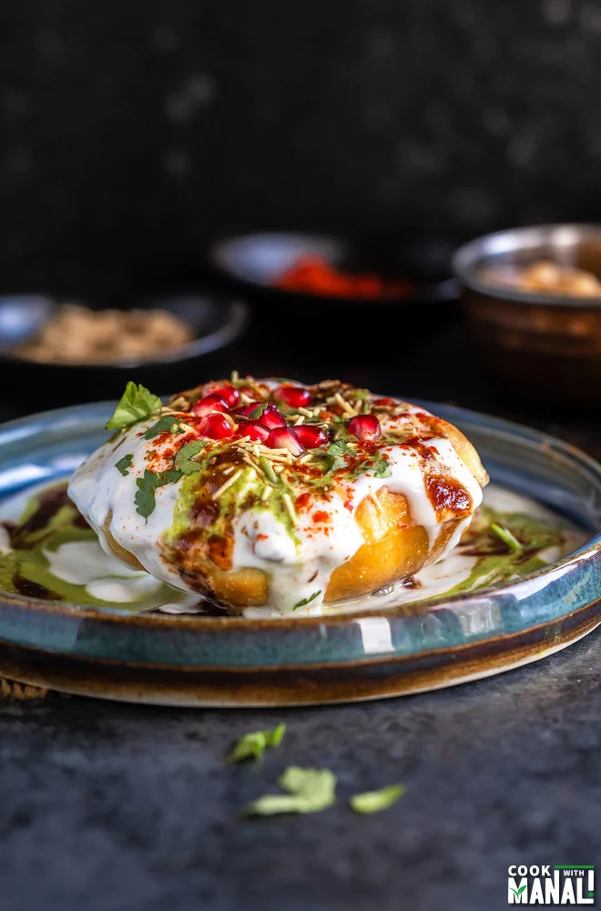

Raj Kachori
Raj Kachori - popular Indian chaat which crispy fried shells (kachori) filled with potatoes, boiled moong dal, yogurts, spices, chutneys and topped with various garnishes!

Description
Kachori is a sweet and spicy deep-fried snack, originating in India subcontinent, and common in places with Indian diaspora and other South Asian diaspora. Alternative names for the snack include kachauri, kachodi and katchuri.[2] So if we break the
two words then- raj= means royalty/grand here. kachori= refers to a flaky, crispy savory snack/pastry made by deep frying dough. Various types of kachoris are made in India , some are stuffed, some are plain but they are all crispy.
Ingredients
For Kachori
- 1 cup fine sooji 165 grams, fine semolina
- 1 tablespoon all purpose flour 11 grams
- 3 tablespoons besan 33 grams, gram flour
- 1/4 teaspoon salt
- 1/4 teaspoon baking powder
- 2 teaspoons oil 10 ml
- water to knead the dough, 1/3 to 1/2 cup
For Yogurt
- 4 cups whole milk yogurt plain, 960 grams
- 4 teaspoons sugar
- 1 teaspoon kala namak black salt
For filling
2 medium potatoes boiled and diced
- 1 cup chickpeas boiled
- 10-15 papdi
- 1 cup green moong dal boiled
- cumin powder
- chaat masala
- cilantro chutney
- sweet tamarind chutney
- kashmiri red chili powder to garnish
- chopped cilantro to garnish
- sev to garnish
- pomegranate arils to garnish
Steps
- It's a good idea to make all the fillings in advance- boil the potatoes and dice them, boil the moong dal, boil the chickpeas or use canned chickpeas, prepare the cilantro chutney and sweet tamarind chutney (you can also use store bought). And
in a large bowl whisk together 4 cups of yogurt with 4 teaspoons sugar and 1 teaspoon kala namak. Set it aside.
- To a bowl add fine sooji, maida, besan, salt and baking powder. Mix using a whisk. Add 2 teaspoons oil.
- And then start adding water and knead to form a soft and smooth dough (should not be hard at all as semolina absorbs water as it sits so make the dough a little more on the softer side). Cover the dough with a damp cloth and let rest for 15 minutes.
Meanwhile heat oil (around 1-2 inches of oil) in a kadai on medium heat (not too hot and not too cold), medium is what you want.
- Then pinch take portion out of the dough (around 45-50 grams ) and roll it between your palms to make a round, then press to flatten it.
- Dip pressed dough in little oil (this helps if dough has become little dry and also helps in rolling) and start rolling the kachoris now. Roll into a circle and then use a bowl/cookie cutter to trim the edges so that you have clean edges. You
should have a circle of around 4 to 5 inches diameter. Now, I like to roll it a little again, just one stroke length wise and one width wise to make sure it's not very thick and all even. You can roll all kachoris at one time and then fry
(keep all rolled kachoris covered else dough will dry out).
- Add one rolled kachoris into the oil. As soon as you drop it, push oil over the top of the kachori which is not dipped in oil with a spatula and also keep pressing the top of the kachori, this will help it in puffing it up.
- Keep pressing the top with a spatula and it will puff up if rolled evenly. Turn few times to get it evenly golden from both sides. Then remove fried kachori on a plate and fry all kachoris similarly. Now wait for kachoris to cool.
- Now once it has cooled down, arrange the kachori on a serving plate. Then tap and break the top of the kachoris to make space for the filling. Add around 1/2 tablespoon diced potatoes (4-5 small pieces of diced potatoes) and 1 tablespoon boiled
chickpeas. Also crush a papdi and add. Sprinkle chaat masala and cumin powder.
- Then add around 1 tablespoon whisked yogurt, followed by 1 tablespoon boiled moong dal.
- Top with teaspoon of cilantro chutney and teaspoon of sweet tamarind chutney. Again top with 2-3 tablespoons yogurt, followed by more cilantro and sweet chutney. Sprinkle cumin powder, chaat masala, red chili powder on top.
- And finally garnish with cilantro, sev and pomegranate. Make all kachoris similarly. You will get around 10 kachoris from this. Serve raj kachori immediately, as soon as you make them with extra yogurt drizzled on the side.